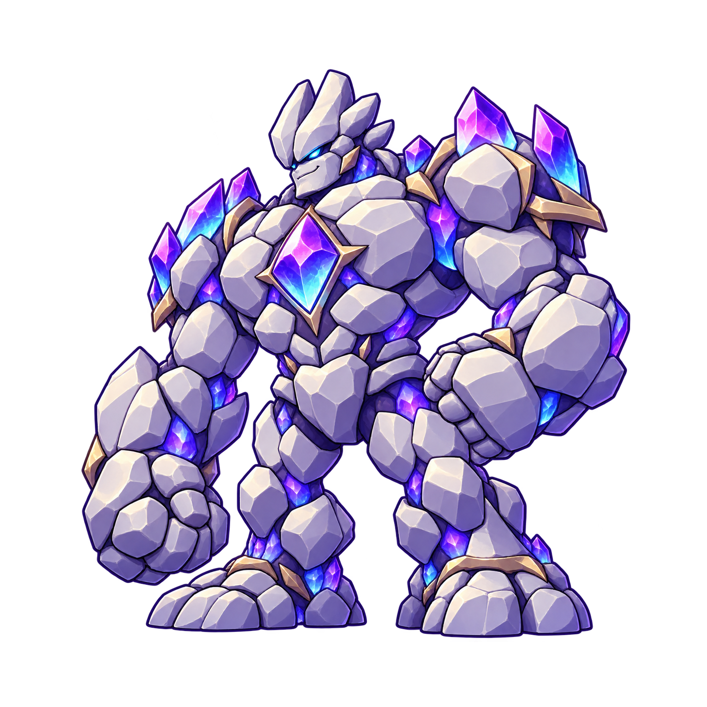

심연의 지배자의 심복. 심연에서 가장 강하다고 자부하며, 침입자는 묻지도 않고 스매시로 부숴버린다.
아트·모션 검토용. 실제 월드 6A 전투와 보상에는 아직 연결되지 않았습니다.
그라운드 스탬핑: 60초마다 80% 확률로 발동. 도약 후 발 접촉 순간 HP 절반 감소, 현재 HP 1이면 Game Over.
배드락라이즈: 10초마다 발동, 공격 방어 확률 77%. 몸이 검게 변한다.
홀수 HP의 반감 처리와 방어 지속시간은 전투 구현 전에 정할 항목입니다. 아래 움직임은 아트 타이밍 미리보기이며 확률·피해 계산을 실행하지 않습니다.

스탠딩 CG · 보스·애니메이션 명세 · 생성 프롬프트